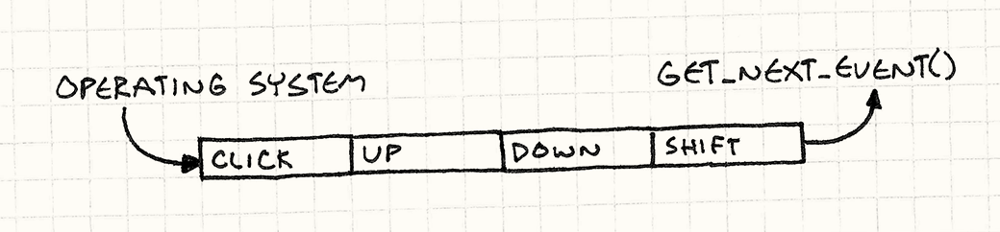
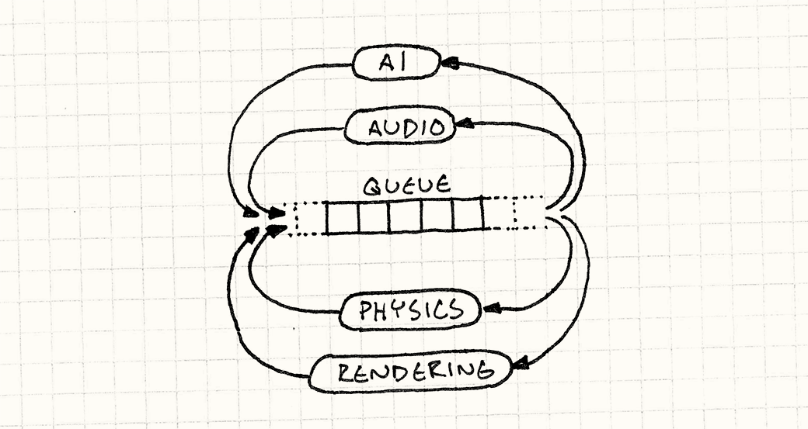
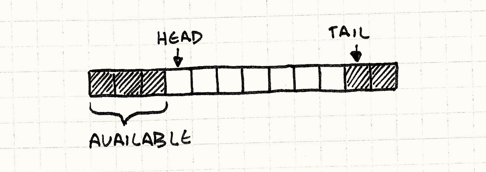
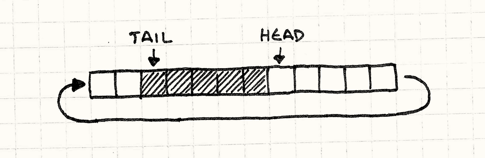

Event Queue
Game Programming PatternsDecoupling Patterns
Intent
Decouple when a message or event is sent from when it is processed.
Motivation
Unless you live under one of the few rocks that still lack Internet access, you’ve probably already heard of an “event queue”. If not, maybe “message queue”, or “event loop”, or “message pump” rings a bell. To refresh your memory, let’s walk through a couple of common manifestations of the pattern.
GUI event loops
If you’ve ever done any user interface programming, then you’re well acquainted with events. Every time the user interacts with your program — clicks a button, pulls down a menu, or presses a key — the operating system generates an event. It throws this object at your app, and your job is to grab it and hook it up to some interesting behavior.
In order to receive these missives, somewhere deep in the bowels of your code is an event loop. It looks roughly like this:
while (running) { Event event = getNextEvent(); // Handle event... }
The call to getNextEvent() pulls a bit of unprocessed user input into your
app. You route it to an event handler and, like magic, your application comes to
life. The interesting part is that the application pulls in the event when
it wants it. The operating system doesn’t just immediately jump to some code in your app when the user pokes a
peripheral.
That means when user input comes in, it needs to go somewhere so that the
operating system doesn’t lose it between when the device driver reported the
input and when your app gets around to calling getNextEvent(). That
“somewhere” is a queue.

When user input comes in, the OS adds it to a queue of unprocessed events. When
you call getNextEvent(), it pulls the oldest event off the queue and hands it
to your application.
Central event bus
Most games aren’t event-driven like this, but it is common for a game to have its own event queue as the backbone of its nervous system. You’ll often hear “central” or “global” or “main” used to describe it. It’s used for high level communication between game systems that want to stay decoupled.
Say your game has a tutorial system to display help boxes after specific in-game events. For example, the first time the player vanquishes a foul beastie, you want to show a little balloon that says, “Press X to grab the loot!”
Your gameplay and combat code are likely complex enough as it is. The last thing you want to do is stuff a bunch of checks for triggering tutorials in there. Instead, some games have a central event queue. Any game system can send to it, so the combat code can add an “enemy died” event every time you slay a foe.
Likewise, any game system can receive events from the queue. The tutorial engine registers itself with the queue and indicates it wants to receive “enemy died” events. This way, knowledge of an enemy dying makes its way from the combat system over to the tutorial engine without the two being directly aware of each other.

I thought about using this as the example for the rest of the chapter, but I’m not generally a fan of global systems. It is a common technique, but I don’t want you to think that event queues have to be global.
Say what?
Instead, let’s add sound to our game. Humans are mainly visual animals, but hearing is deeply connected to our emotions and our sense of physical space. The right simulated echo can make a black screen feel like an enormous cavern, and a well-timed violin adagio can make your heartstrings hum in sympathetic resonance.
To get our game wound for sound, we’ll start with the simplest possible approach and see how it goes. We’ll add a little “audio engine” that has an API for playing a sound given an identifier and a volume:
class Audio { public: static void playSound(SoundId id, int volume); };
It’s responsible for loading the appropriate sound resource, finding an available channel to play it on, and starting it up. This chapter isn’t about some platform’s real audio API, so I’ll conjure one up that we can presume is implemented elsewhere. Using it, we write our method like so:
void Audio::playSound(SoundId id, int volume) { ResourceId resource = loadSound(id); int channel = findOpenChannel(); if (channel == -1) return; startSound(resource, channel, volume); }
We check that in, create a few sound files, and start sprinkling playSound()
calls through our codebase like some magical audio fairy. For example, in our UI
code, when the selected menu item changes, we play a little bloop:
class Menu { public: void onSelect(int index) { Audio::playSound(SOUND_BLOOP, VOL_MAX); // Other stuff... } };
After doing this, we notice that sometimes when you switch menu items, the whole screen freezes for a few frames. We’ve hit our first issue:
- Problem 1: The API blocks the caller until the audio engine has completely processed the request.
Our playSound() method is synchronous — it doesn’t return back to the
caller until bleeps are coming out of the speakers. If a sound file has to be
loaded from disc first, that may take a while.
Ignoring that for now, we move on. In the AI code, we add a call to let out a wail of anguish when an enemy takes damage from the player. Nothing warms a gamer’s heart like inflicting simulated pain on a virtual living being.
It works, but sometimes when the hero does a mighty attack, it hits two enemies in the exact same frame. That causes the game to play the wail sound twice simultaneously. If you know anything about audio, you know mixing multiple sounds together sums their waveforms. When those are the same waveform, it’s the same as one sound played twice as loud. It’s jarringly loud.
We have a related problem in boss fights when piles of minions are running around causing mayhem. The hardware can only play so many sounds at one time. When we go over that limit, sounds get ignored or cut off.
To handle these issues, we need to look at the entire set of sound calls to
aggregate and prioritize them. Unfortunately, our audio API handles each
playSound() call independently. It sees requests through a pinhole, one at a
time.
- Problem 2: Requests cannot be processed in aggregate.
These problems seem like mere annoyances compared to the next issue that falls
in our lap. By now, we’ve strewn playSound() calls throughout the codebase in
lots of different game systems. But our game engine is running on modern
multi-core hardware. To take advantage of those cores, we distribute those
systems on different threads — rendering on one, AI on another, etc.
Since our API is synchronous, it runs on the caller’s thread. When we call it from different game systems, we’re hitting our API concurrently from multiple threads. Look at that sample code. See any thread synchronization? Me neither.
This is particularly egregious because we intended to have a separate thread for audio. It’s just sitting there totally idle while these other threads are busy stepping all over each other and breaking things.
- Problem 3: Requests are processed on the wrong thread.
The common theme to these problems is that the audio engine interprets a call to
playSound() to mean, “Drop everything and play the sound right now!”
Immediacy is the problem. Other game systems call playSound() at their
convenience, but not necessarily when it’s convenient for the audio engine to
handle that request. To fix that, we’ll decouple receiving a request from
processing it.
The Pattern
A queue stores a series of notifications or requests in first-in, first-out order. Sending a notification enqueues the request and returns. The request processor then processes items from the queue at a later time.
Requests can be handled directly, or routed to interested parties. This decouples the sender from the receiver both statically and in time.
When to Use It
If you just want to decouple who receives a message from its sender, patterns like Observer and Command will take care of you with less complexity. You only need a queue when you want to decouple something in time.
I think of it in terms of pushing and pulling. You have some code A that wants another chunk B to do some work. The natural way for A to initiate that is by pushing the request to B.
Meanwhile, the natural way for B to process that request is by pulling it in at a convenient time in its run cycle. When you have a push model on one end and a pull model on the other, you need a buffer between them. That’s what a queue provides that simpler decoupling patterns don’t.
Queues give control to the code that pulls from it: the receiver can delay processing, aggregate requests, or discard them entirely. But it does this by taking control away from the sender. All it can do is throw a request on the queue and hope for the best. This makes queues a poor fit when the sender needs a response.
Keep in Mind
Unlike some more modest patterns in this book, event queues are complex and tend to have a wide-reaching effect on the architecture of our games. That means you’ll want to think hard about how — or if — you use it.
A central event queue is a global variable
One common use of this pattern is for a sort of Grand Central Station that all parts of the game can route messages through. It’s a powerful piece of infrastructure, but powerful doesn’t always mean good.
It took a while, but most of us learned the hard way that global variables are bad. When you have a piece of state that any part of the program can poke at, all sorts of subtle interdependencies creep in. This pattern wraps that state in a nice little protocol, but it’s still a global, with all of the danger that entails.
The state of the world can change under you
Say some AI code posts an “entity died” event to a queue when a virtual minion shuffles off its mortal coil. That event hangs out in the queue for who knows how many frames until it eventually works its way to the front and gets processed.
Meanwhile, the experience system wants to track the heroine’s body count and reward her for her grisly efficiency. It receives these “entity died” events then determines the kind of entity slain and the difficulty of the kill so it can dish out an appropriate reward.
That requires various pieces of state in the world. We need the entity that died so we can see how tough it was. We may want to inspect its surroundings to see what other obstacles or minions were nearby. But if the event isn’t received until later, that stuff may be gone. The entity may have been deallocated, and other nearby foes may have wandered off.
When you receive an event, you have to be careful not to assume the current state of the world reflects how the world was when the event was raised. This means queued events tend to be more data heavy than in synchronous systems. With the latter, the notification can just say “something happened” and the receiver can look around for the details. With a queue, those ephemeral details must be captured when the event is sent so they can be used later.
You can get stuck in feedback loops
All event and message systems have to worry about cycles:
- A sends an event.
- B receives it and responds by sending an event.
- That event happens to be one that A cares about, so it receives it. In response, it sends an event…
- Go to 2.
When your messaging system is synchronous, you find cycles quickly: they overflow the stack and crash your game. With a queue, the asynchrony unwinds the stack, so the game may keep running even though spurious events are sloshing back and forth in there. A common rule to avoid this is to avoid sending events from within an event handler.
Sample Code
We’ve already seen some code. It’s not perfect, but it has the right basic functionality: the public API we want, and the right low level audio calls. All that’s left for us to do now is fix its problems.
The first is that our API blocks. When a piece of code plays a sound, it can’t
do anything else until playSound() finishes loading the resource and actually
starts making the speaker wiggle.
We want to defer that work until later so that playSound() can return quickly.
To do that, we need to reify the request to play a sound. We need a little
structure that stores the details of a pending request so we can keep it around
until later.
struct PlayMessage { SoundId id; int volume; };
Next, we need to give Audio some storage space to keep track of these pending
play messages. Now, your algorithms professor would
tell you to use some exciting data structure here like a Fibonacci
heap or a skip
list, or, hell, at least a linked
list. But, in practice, the best way to store a bunch of homogenous things is
almost always a plain old array:
-
No dynamic allocation.
-
No memory overhead for bookkeeping information or pointers.
-
Cache-friendly contiguous memory usage.
So let’s do that:
class Audio { public: static void init() { numPending_ = 0; } // Other stuff... private: static const int MAX_PENDING = 16; static PlayMessage pending_[MAX_PENDING]; static int numPending_; };
We can tune the array size to cover our worst case. To play a sound, we just slot a new message in there at the end:
void Audio::playSound(SoundId id, int volume) { assert(numPending_ < MAX_PENDING); pending_[numPending_].id = id; pending_[numPending_].volume = volume; numPending_++; }
This lets playSound() return almost instantly, but we do still have to play
the sound, of course. That code needs to go somewhere, and that somewhere is an
update() method:
class Audio { public: static void update() { for (int i = 0; i < numPending_; i++) { ResourceId resource = loadSound(pending_[i].id); int channel = findOpenChannel(); if (channel == -1) return; startSound(resource, channel, pending_[i].volume); } numPending_ = 0; } // Other stuff... };
Now we just need to call that from somewhere convenient. What “convenient” means depends on your game. It may mean calling it from the main Game Loop, or from a dedicated audio thread.
This works fine, but it does presume we can process every sound request in a
single call to update(). If you’re doing something like processing a request
asynchronously after its sound resource is loaded, that won’t work. For
update() to work on one request at a time, it needs to be able to pull
requests out of the buffer while leaving the rest. In other words, we need an
actual queue.
A ring buffer
There are a bunch of ways to implement queues, but my favorite is called a ring buffer. It preserves everything that’s great about arrays, but lets us incrementally remove items from the front of the queue.
Now, I know what you’re thinking. If we remove items from the beginning of the array, don’t we have to shift all of the remaining items over? Isn’t that slow?
This is why they made us learn linked lists: you can remove nodes from them without having to shift things around. Well, it turns out you can implement a queue without any shifting in an array too. I’ll walk you through it, but first let’s get precise on some terms.
-
The head of the queue is where requests are read from. The head is the oldest pending request.
-
The tail is the other end. It’s the slot in the array where the next enqueued request will be written. Note that it’s just past the end of the queue. You can think of it as a half-open range if that helps.
Since playSound() appends new requests at the end of the array, the head
starts at element zero and the tail grows to the right.

Let’s code that up. First, we’ll tweak our fields a bit to make these two markers explicit in the class:
class Audio { public: static void init() { head_ = 0; tail_ = 0; } // Methods... private: static int head_; static int tail_; // Array... };
In the implementation of playSound(), numPending_ has been replaced by
tail_, but otherwise it’s the same:
void Audio::playSound(SoundId id, int volume) { assert(tail_ < MAX_PENDING); // Add to the end of the list. pending_[tail_].id = id; pending_[tail_].volume = volume; tail_++; }
The more interesting change is in update():
void Audio::update() { // If there are no pending requests, do nothing. if (head_ == tail_) return; ResourceId resource = loadSound(pending_[head_].id); int channel = findOpenChannel(); if (channel == -1) return; startSound(resource, channel, pending_[head_].volume); head_++; }
We process the request at the head and then discard it by advancing the head pointer to the right. We detect an empty queue by seeing if there’s any distance between the head and tail.
Now we’ve got a queue — we can add to the end and remove from the front.
There’s an obvious problem, though. As we run requests through the queue, the
head and tail keep crawling to the right. Eventually, tail_ will hit the end
of the array and party time is over. This is where it
gets clever.

Notice that while the tail is creeping forward, the head is too. That means we’ve got array elements at the beginning of the array that aren’t being used any more. So what we do is wrap the tail back around to the beginning of the array when it runs off the end. That’s why it’s called a ring buffer: it acts like a circular array of cells.

Implementing that is remarkably easy. When we enqueue an item, we just need to make sure the tail wraps around to the beginning of the array when it reaches the end:
void Audio::playSound(SoundId id, int volume) { assert((tail_ + 1) % MAX_PENDING != head_); // Add to the end of the list. pending_[tail_].id = id; pending_[tail_].volume = volume; tail_ = (tail_ + 1) % MAX_PENDING; }
Replacing tail_++ with an increment modulo the array size wraps it back
around. The other change is the assertion. We need to ensure the queue doesn’t
overflow. As long as there are fewer than MAX_PENDING requests in the queue,
there will be a little gap of unused cells between the head and tail. If the
queue fills up, those will be gone and, like some weird backwards Ouroboros, the
tail will collide with the head and start overwriting it. The assertion ensures
that doesn’t happen.
In update(), we wrap the head around too:
void Audio::update() { // If there are no pending requests, do nothing. if (head_ == tail_) return; ResourceId resource = loadSound(pending_[head_].id); int channel = findOpenChannel(); if (channel == -1) return; startSound(resource, channel, pending_[head_].volume); head_ = (head_ + 1) % MAX_PENDING; }
There you go: a queue with no dynamic allocation, no copying elements around, and the cache-friendliness of a simple array.
Aggregating requests
Now that we’ve got a queue in place, we can move onto the other problems. The first is that multiple requests to play the same sound end up too loud. Since we know which requests are waiting to be processed now, all we need to do is merge a request if it matches an already pending one:
void Audio::playSound(SoundId id, int volume) { // Walk the pending requests. for (int i = head_; i != tail_; i = (i + 1) % MAX_PENDING) { if (pending_[i].id == id) { // Use the larger of the two volumes. pending_[i].volume = max(volume, pending_[i].volume); // Don't need to enqueue. return; } } // Previous code... }
When we get two requests to play the same sound, we collapse them to a single request for whichever is loudest. This “aggregation” is pretty rudimentary, but we could use the same idea to do more interesting batching.
Note that we’re merging when the request is enqueued, not when it’s processed. That’s easier on our queue since we don’t waste slots on redundant requests that will end up being collapsed later. It’s also simpler to implement.
It does, however, put the processing burden on the caller. A call to
playSound() will walk the entire queue before it returns, which could be slow if the queue is large. It may make more sense to
aggregate in update() instead.
There’s something important to keep in mind here. The window of “simultaneous” requests that we can aggregate is only as big as the queue. If we process requests more quickly and the queue size stays small, then we’ll have fewer opportunities to batch things together. Likewise, if processing lags behind and the queue gets full, we’ll find more things to collapse.
This pattern insulates the requester from knowing when the request gets processed, but when you treat the entire queue as a live data structure to be played with, then lag between request and processing can visibly affect behavior. Make sure you’re OK with that before doing this.
Spanning threads
Finally, the most pernicious problem. With our synchronous audio API, whatever
thread called playSound() was the thread that processed the request. That’s
often not what we want.
On today’s multi-core hardware, you need more than one thread if you want to get the most out of your chip. There are infinite ways to distribute code across threads, but a common strategy is to move each domain of the game onto its own thread — audio, rendering, AI, etc.
We’re in good shape to do that now that we have three critical pieces:
-
The code for requesting a sound is decoupled from the code that plays it.
-
We have a queue for marshalling between the two.
-
The queue is encapsulated from the rest of the program.
All that’s left is to make the methods that modify the queue — playSound()
and update() — thread-safe. Normally, I’d whip up some concrete code to do
that, but since this is a book about architecture, I don’t want to get mired in
the details of any specific API or locking mechanism.
At a high level, all we need to do is ensure that the queue isn’t modified
concurrently. Since playSound() does a very small amount of work — basically
just assigning a few fields — it can lock without blocking processing for long.
In update(), we wait on something like a condition variable so that we don’t
burn CPU cycles until there’s a request to process.
Design Decisions
Many games use event queues as a key part of their communication structure, and you can spend a ton of time designing all sorts of complex routing and filtering for messages. But, before you go off and build something like the Los Angeles telephone switchboard, I encourage you to start simple. Here’s a few starter questions to consider:
What goes in the queue?
I’ve used “event” and “message” interchangeably so far because it mostly doesn’t matter. You get the same decoupling and aggregation abilities regardless of what you’re stuffing in the queue.
-
If you queue events:
An “event” or “notification” describes something that already happened, like “monster died”. You queue it so that other objects can respond to the event, sort of like an asynchronous Observer pattern.
-
You are likely to allow multiple listeners. Since the queue contains things that already happened, the sender probably doesn’t care who receives it. From its perspective, the event is in the past and is already forgotten.
-
The scope of the queue tends to be broader. Event queues are often used to broadcast events to any and all interested parties. To allow maximum flexibility for which parties can be interested, these queues tend to be more globally visible.
-
-
If you queue messages:
A “message” or “request” describes an action that we want to happen in the future, like “play sound”. You can think of this as an asynchronous API to a service.
-
You are more likely to have a single listener. In the example, the queued messages are requests specifically for the audio API to play a sound. If other random parts of the game engine started stealing messages off the queue, it wouldn’t do much good.
-
Who can read from the queue?
In our example, the queue is encapsulated and only the Audio class can read
from it. In a user interface’s event system, you can register listeners to your
heart’s content. You sometimes hear the terms “single-cast” and “broadcast” to
distinguish these, and both styles are useful.
-
A single-cast queue:
This is the natural fit when a queue is part of a class’s API. Like in our audio example, from the caller’s perspective, they just see a
playSound()method they can call.-
The queue becomes an implementation detail of the reader. All the sender knows is that it sent a message.
-
The queue is more encapsulated. All other things being equal, more encapsulation is usually better.
-
You don’t have to worry about contention between listeners. With multiple listeners, you have to decide if they all get every item (broadcast) or if each item in the queue is parcelled out to one listener (something more like a work queue).
In either case, the listeners may end up doing redundant work or interfere with each other, and you have to think carefully about the behavior you want. With a single listener, that complexity disappears.
-
-
A broadcast queue:
This is how most “event” systems work. If you have ten listeners when an event comes in, all ten of them see the event.
-
Events can get dropped on the floor. A corollary to the previous point is that if you have zero listeners, all zero of them see the event. In most broadcast systems, if there are no listeners at the point in time that an event is processed, the event just gets discarded.
-
You may need to filter events. Broadcast queues are often widely visible to much of the program, and you can end up with a bunch of listeners. Multiply lots of events times lots of listeners, and you end up with a ton of event handlers to invoke.
To cut that down to size, most broadcast event systems let a listener winnow down the set of events they receive. For example, they may say they only want to receive mouse events, or events within a certain region of the UI.
-
-
A work queue:
Like a broadcast queue, here you have multiple listeners too. The difference is that each item in the queue only goes to one of them. This is a common pattern for parcelling out jobs to a pool of concurrently running threads.
- You have to schedule. Since an item only goes to one listener, the queue needs logic to figure out the best one to choose. This may be as simple as round robin or random choice, or some more complex prioritizing system.
Who can write to the queue?
This is the flip side of the previous design choice. This pattern works with all of the possible read/write configurations: one-to-one, one-to-many, many-to-one, or many-to-many.
-
With one writer:
This style is most similar to the synchronous Observer pattern. You have one privileged object that generates events that others can then receive.
-
You implicitly know where the event is coming from. Since there’s only one object that can add to the queue, any listener can safely assume that’s the sender.
-
You usually allow multiple readers. You can have a one-sender-one-receiver queue, but that starts to feel less like the communication system this pattern is about and more a vanilla queue data structure.
-
-
With multiple writers:
This is how our audio engine example works. Since
playSound()is a public method, any part of the codebase can add a request to the queue. “Global” or “central” event buses work like this too.-
You have to be more careful of cycles. Since anything can potentially put something onto the queue, it’s easier to accidentally enqueue something in the middle of handling an event. If you aren’t careful, that may trigger a feedback loop.
-
You’ll likely want some reference to the sender in the event itself. When a listener gets an event, it doesn’t know who sent it, since it could be anyone. If that’s something they need to know, you’ll want to pack that into the event object so that the listener can use it.
-
What is the lifetime of the objects in the queue?
With a synchronous notification, execution doesn’t return to the sender until all of the receivers have finished processing the message. That means the message itself can safely live in a local variable on the stack. With a queue, the message outlives the call that enqueues it.
If you’re using a garbage collected language, you don’t need to worry about this too much. Stuff the message in the queue and it will stick around in memory as long as it’s needed. In C or C++, it’s up to you to ensure the object lives long enough.
-
Pass ownership:
This is the traditional way to do things when managing memory manually. When a message gets queued, the queue claims it and the sender no longer owns it. When it gets processed, the receiver takes ownership and is responsible for deallocating it.
-
Share ownership:
These days, now that even C++ programmers are more comfortable with garbage collection, shared ownership is more typical. With this, the message sticks around as long as anything has a reference to it and is automatically freed when forgotten.
-
The queue owns it:
Another option is to have messages always live on the queue. Instead of allocating the message itself, the sender requests a “fresh” one from the queue. The queue returns a reference to a message already in memory inside the queue, and the sender fills it in. When the message gets processed, the receiver just refers to the same message in the queue.
See Also
-
I’ve mentioned this a few times already, but in many ways, this pattern is the asynchronous cousin to the well-known Observer pattern.
-
Like many patterns, event queues go by a number of aliases. One established term is “message queue”. It’s usually referring to a higher level manifestation. Where our event queues are within an application, message queues are usually used for communicating between them.
Another term is “publish/subscribe”, sometimes abbreviated to “pubsub”. Like “message queue”, it usually refers to larger distributed systems and less the humble coding pattern we’re focused on.
-
A finite state machine, similar to the Gang of Four’s State pattern, requires a stream of inputs. If you want it to respond to those asynchronously, it makes sense to queue them.
When you have a bunch of state machines sending messages to each other, each with a little queue of pending inputs (called a mailbox) then you’ve re-invented the actor model of computation.
-
The Go programming language’s built-in “channel” type is essentially an event or message queue.